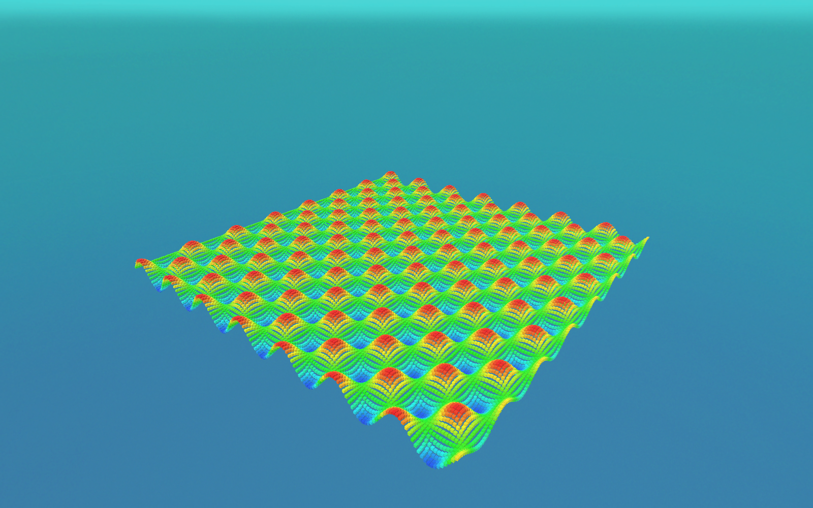

🧩 Lesson 4.1: The ECS Mindset — Entities, Components & Systems
Everything you've built so far hangs off GameObjects and MonoBehaviours. That model is comfortable, flexible — and, past a few thousand active objects, slow. This module introduces Unity's Entity Component System (the heart of DOTS): a data-oriented way to lay out and process objects that lets Unity 6 simulate and render tens of thousands of them in a single frame. Before any code, you need the mental model. That's this lesson.
🎯 Learning Objectives
By the end of this lesson, you will be able to:
- Explain the three pillars of ECS — entities, components, and systems — and how they differ from GameObjects and MonoBehaviours
- Describe why data-oriented design is fast: contiguous memory, cache locality, and archetypes/chunks
- Read an ECS data-flow diagram and trace what happens to entity data in one frame
- Recognise a first component and system in code
- Judge when ECS is the right tool — and when plain GameObjects still win
Estimated Time: 60 minutes · Prerequisite: Module 3 (the Job System & Burst — ECS builds directly on data-oriented thinking)
In This Lesson
The Payoff: Scale
Here's what we're working toward. This is a real render captured from Unity 6 — thousands of entities, each with its own position and motion, simulated and drawn together. Try building this with one GameObject per cube and the editor grinds to a crawl; with ECS it runs comfortably, because the data is laid out for the machine rather than for our convenience.

LocalTransform and colour component, laid out here as a wave field. Rendering tens of thousands of separate objects like this is exactly what ECS is built for; we assemble a moving version in the Module 4 mini-project (Lesson 4.5).The number of objects isn't the interesting part — you could brute-force a few thousand GameObjects on a strong machine. The interesting part is headroom: the same scene in ECS leaves the CPU with time to spare for gameplay, physics, and AI, because iterating tightly packed data is something modern processors do extraordinarily well. This lesson explains why.
Three Ideas: Entity, Component, System
ECS splits the thing a MonoBehaviour bundles together — identity, data, and behaviour — into three separate concepts. Learning them as distinct ideas is the whole mindset shift.
🆔 Entity
Just an ID — a lightweight number (an index plus a version). An entity holds no data and no code by itself. It's a handle that says "some object #1042 exists." Think of it as the row key in a database table.
📦 Component
Pure data, and nothing else — a struct implementing IComponentData. A Velocity, a Health, a LocalTransform. No methods, no logic. Components are the columns attached to an entity's row.
⚙️ System
All the behaviour. A system queries for every entity that has a certain set of components and processes them in a tight loop each frame. Systems are the code; they own no data of their own.
Compare that to the object-oriented model you know: a MonoBehaviour is identity, data, and behaviour welded into one class, and each one lives at its own scattered spot in memory. ECS pulls those apart so that data of the same kind sits together and behaviour runs over it in bulk.
📖 Definition
DOTS (Data-Oriented Technology Stack) is Unity's umbrella for three cooperating packages: the Entities package (ECS), the C# Job System (safe multithreading — Module 3), and the Burst compiler (turns that job code into tight native machine code). ECS is the data model; jobs and Burst are what make iterating it fast in parallel.
From Objects to Data — Why It's Fast
The reason ECS is fast has almost nothing to do with clever algorithms and everything to do with memory layout. Modern CPUs are starved not for compute but for data: reading a value that isn't already in the CPU cache costs hundreds of cycles while the processor waits on main memory. Performance is won by keeping the data the CPU needs next right beside the data it's using now.
GameObjects fail this test. Each one is a managed C# object allocated wherever the heap had room; its components are separate objects again, connected by references. Iterating 10,000 of them means chasing 10,000 pointers all over memory — a cache miss at nearly every step.
ECS stores components of the same type in contiguous arrays. Ask for every Velocity and you get a solid block of Velocity values, one after another. The CPU streams straight through it, prefetching as it goes. Same work, a fraction of the waiting.
pos·vel·hp"] -.pointer.-> G2["Object B
pos·vel·hp"] G2 -.pointer.-> G3["Object C
pos·vel·hp"] G3 -.pointer.-> G4["Object D
pos·vel·hp"] end subgraph DOD["ECS / DOD — one type, one contiguous array"] direction LR P["pos pos pos pos pos"] --> V["vel vel vel vel vel"] --> H["hp hp hp hp hp"] end OOP -->|"same data,
re-laid-out"| DOD
Figure 2: The same objects' data, re-organised. OOP scatters each object (chase a pointer, miss the cache); ECS groups each component type into a packed array the CPU can stream through.
💡 This is data-oriented design. You met the idea in Module 3 when a job read aNativeArrayinstead of aList<GameObject>. ECS is that principle applied to your entire object model, with the engine managing the arrays for you.
The ECS Data Flow
Here is how the three pillars connect at runtime, drawn as a faithful diagram of the real flow. Follow the arrows: a system asks a query for the components it wants; the query hands back the matching entities' data as packed arrays inside chunks; the system reads and writes those arrays; and once per frame the presentation systems hand the final transforms to Entities Graphics, which draws them.
LocalToWorld matrices to Entities Graphics for drawing. This is the flow behind Figure 1.💡 Why a diagram and not a screenshot? ECS has no single "window" to photograph — its state lives in memory, and the Entities Hierarchy/Inspector are UI Toolkit panels that can't be captured cleanly. So the flow is drawn precisely from the real API, while the result (Figure 1) is a genuine Unity capture. That split — real renders for on-screen results, faithful diagrams for tools and data flow — runs through this whole course.
A First Taste in Code
You'll write these properly in the next three lessons; for now just read them and match each to a pillar. First, a component — a data-only struct:
using Unity.Entities;
using Unity.Mathematics;
// A COMPONENT: pure data, no methods, no MonoBehaviour.
// float3 is Unity.Mathematics' Burst-friendly vector type.
public struct Velocity : IComponentData
{
public float3 Value;
}Next, a system — the behaviour. It queries every entity that has both a LocalTransform (ECS's transform component) and our Velocity, then advances each position. Note there's no list of objects and no GetComponent: the query is the selection.
using Unity.Burst;
using Unity.Entities;
using Unity.Transforms;
[BurstCompile]
public partial struct MovementSystem : ISystem
{
[BurstCompile]
public void OnUpdate(ref SystemState state)
{
float dt = SystemAPI.Time.DeltaTime;
// Iterate every entity matching { LocalTransform, Velocity }.
// RefRW = read/write access, RefRO = read-only.
foreach (var (transform, velocity) in
SystemAPI.Query<RefRW<LocalTransform>, RefRO<Velocity>>())
{
transform.ValueRW.Position += velocity.ValueRO.Value * dt;
}
}
}That foreach is the whole idea in miniature: one system, one query, a straight pass over packed data. There's no Update() on ten thousand components each doing their own thing — there's one loop over ten thousand rows. In Lesson 4.3 we'll turn this loop into a parallel Burst job and watch it scale to the scene in Figure 1.
⚠️ partial is not optional
ECS systems and jobs are declared partial because Unity's source generators write the other half at compile time — the boilerplate that turns SystemAPI.Query<…>() into real chunk iteration. Forget partial and you'll get a wall of confusing errors. It's the number-one beginner ECS mistake.
Archetypes & Chunks
One more idea makes the whole model click — and it's the key to why those arrays are contiguous. An entity's archetype is the exact set of component types it has. An entity with { LocalTransform, Velocity } has a different archetype from one with { LocalTransform, Velocity, Health }.
Unity groups every entity of the same archetype together into chunks — 16 KB blocks of memory. Within a chunk, each component type is stored as its own tightly packed array (that's the table in Figure 3). When a system queries for { LocalTransform, Velocity }, Unity simply hands it the matching chunks and it walks their arrays end to end. No searching, no pointer-chasing.
⚠️ Adding or removing a component is a "structural change"
Because the archetype defines where an entity lives, adding or removing a component moves the entity into a different chunk — a structural change. It's not free, and it can't happen safely in the middle of a job. That's why ECS code batches such changes (often through an EntityCommandBuffer). We'll cover the pattern in Lesson 4.3; for now just know that changing what components an entity has is a heavier operation than changing the values inside them.
✅ The mental model in one line
Entities are rows, components are columns, an archetype is a table schema, a chunk is a page of that table, and a system is a query that runs a tight loop over the matching pages every frame.
When to Reach for ECS
ECS is powerful, but it is not a replacement for GameObjects in every project — and being honest about that is part of using it well.
✅ ECS shines when…
- You have many similar things — thousands of projectiles, units, particles, boids, agents, or grid cells — doing the same work.
- Simulation cost dominates and you need it multithreaded and Burst-compiled to hit frame budget.
- The data and behaviour are uniform enough to express as components and systems.
🚫 Plain GameObjects still win when…
- You have a handful of complex, unique objects — the player, a boss, a UI screen — where flexibility beats raw throughput.
- You lean on subsystems that are still GameObject-first in your setup (much UI, some physics and animation workflows).
- The team's productivity matters more than the last millisecond — ECS has a real learning curve and stricter code.
Real projects are often hybrid: GameObjects for the bespoke, high-touch objects, and ECS for the massive, uniform swarms. You don't have to convert your whole game to benefit — you can drop ECS into the one system that needs the scale.
🔎 Prerequisite check. ECS leans hard on Module 3. Components useUnity.Mathematicstypes likefloat3; systems become jobs compiled by Burst to go parallel. If jobs andNativeArraystill feel shaky, revisit Lessons 3.2–3.4 before Lesson 4.3.
Hands-on Challenge
🏋️ Exercise 1: Model it as data (no code yet)
Objective: Practise the mindset shift on paper before the tooling.
Take a classic asteroids field: dozens of asteroids drifting and rotating, plus the player's ship. Describe it the ECS way:
- List the components (data) an asteroid needs. (Hint: where is it? how fast/which way is it moving? how fast does it spin? how big is it?)
- Name the systems (behaviour) that would run over those components each frame.
- Which entities share an archetype? Would the player ship share the asteroids' archetype — why or why not?
✅ A reasonable answer
Components: LocalTransform (position/rotation/scale), Velocity, AngularVelocity (spin), maybe AsteroidSize. Systems: a MovementSystem (position += velocity·dt), a SpinSystem (rotate by angular velocity·dt), a WrapAroundSystem (teleport when off-screen). Archetypes: all asteroids with the same component set share one archetype and pack into the same chunks; the ship, which also has PlayerInput and a Health component the asteroids lack, has a different archetype and lives in its own chunk — even though it too moves.
🏋️ Exercise 2: Spot the pillar
For each item, say whether it's an Entity, a Component, or a System: (a) struct Health : IComponentData { public int Value; }; (b) the loop position += velocity * dt running over every matching row; (c) the ID #4021 that ties one object's data together.
✅ Answers
(a) Component — a data-only struct. (b) System — behaviour over a query. (c) Entity — just an ID.
🎯 Quick Quiz
Question 1: In ECS, what is an entity?
Question 2: Why does storing components in contiguous arrays make ECS fast?
Question 3: Two entities have { LocalTransform, Velocity }; a third has { LocalTransform, Velocity, Health }. What's true?
Question 4: Your MovementSystem : ISystem won't compile — a flood of source-generator errors. What's the most likely cause?
Summary
🎉 Key Takeaways
- ECS splits the
MonoBehaviourbundle into three: entities (IDs), components (data structs), and systems (behaviour over queries). - Its speed comes from memory layout: components of one type are packed into contiguous arrays the CPU can stream through, avoiding cache misses.
- An archetype is an entity's exact set of components; entities of one archetype are stored together in 16 KB chunks.
- A system runs an EntityQuery each frame and loops over the matching chunks — no
GetComponent, no per-objectUpdate(). - Systems and jobs must be
partialso source generators can complete them. - Reach for ECS for many uniform objects that need scale; keep GameObjects for a few complex, bespoke ones. Hybrid is normal.
🚀 What's Next?
Now that the model makes sense, we build it. In Lesson 4.2: Components & Archetypes you'll install the Entities package, define real IComponentData structs, create entities in code, and watch the archetype/chunk system organise them — the concrete foundation under Figure 3.
🧠 You've made the shift
Rows, columns, tables, and a query that runs a tight loop over packed data — that's ECS. Hold onto that picture; every DOTS lesson from here builds on it.